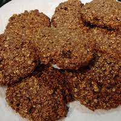

¡Haz tu pedido ahora!  📱 WhatsApp Pedidos inmediatos y consultas 💬 Enviar mensaje 📞 Teléfono Horario: 9am - 6pm Llamar ahora
🍫 Ingredientes Premium Nuestros productos contienen: ✅ Amaranto orgánico ✅ Chocolate amargo 70% cacao ✅ Soja no transgénica ✅ Tenebrio molitor deshidratado (alto en proteína)